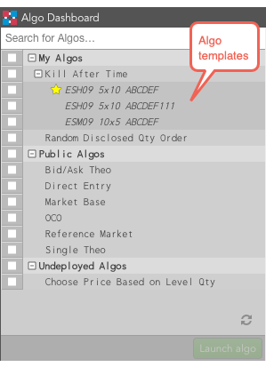

Algo Dashboard provides the ability to create and manage algo templates. These templates allow you to save frequently-used variable settings for future use. For example, suppose you created an algo designed to run on different instruments, but do not want to change the instrument each time that you start the algo. Instead, you can change the instrument variable and save the algo parameters as a new template.

You can create algo templates with the Algo Dashboard and Autotrader widgets. Additionally, you can use algo templates created with either widget.
Note: All algo templates are private and cannot be seen or used by others. Although templates are private, algo users sharing an order book can manage (Pause/Run) and manipulate algo variables once the owner has started the private template.